begin molecules
1 EGFR(ecd,tmd,Y1~u~p,Y2~u~p) #EGF receptor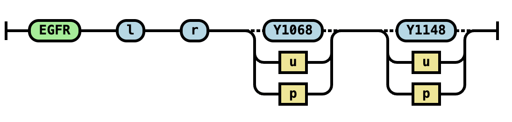
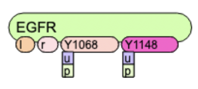
begin species
1 egfr(l,r,Y1068~Y,Y1148~Y) egfr_tot #unphosphorylated receptor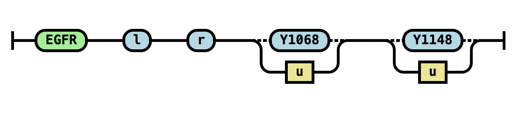
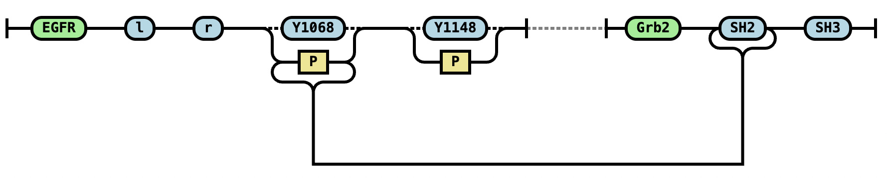
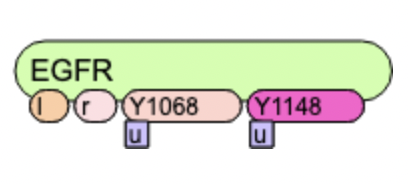
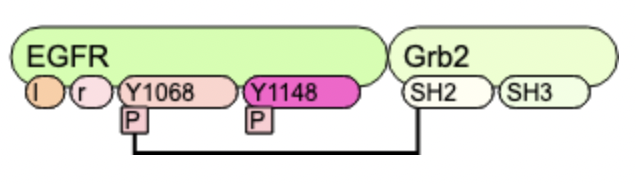
begin observables
1 egfr(l,r,Y1068~Y,Y1148~Y~P) Dimers1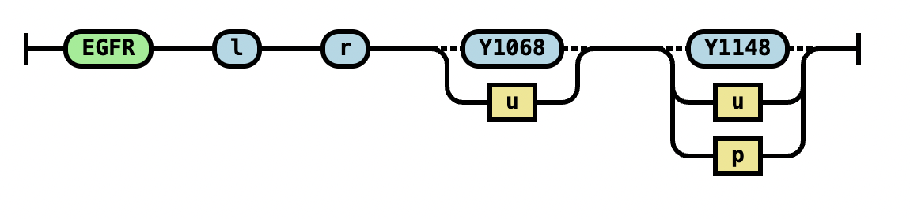

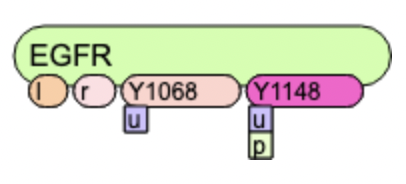
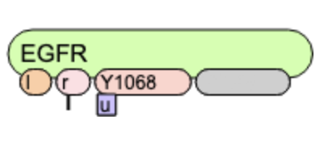
begin reaction rules
1 egfr(l,r,Y1068~Y,Y1148~Y) egfr_tot #unphosphorylated receptorNB: The symbols before
: is reaction rule order - it is optional and not included in BNGL processing or visualization.
Instead of begin reaction rules the block may start with begin rules or begin reactions.
For details of notations (?, | under site shape, grey vs color, etc)
refer to Faeder et al., 2009.

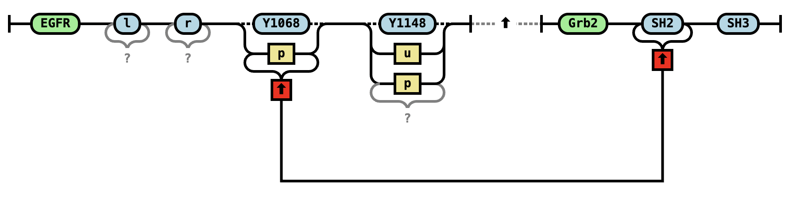


more rules
1 egfr(l,r,Y1068~Y,Y1148~Y) egfr_tot #unphosphorylated receptorNB: The first number is optional and not included in BNGL processing or visualization. Instead of
begin species the block may start with begin seed species.

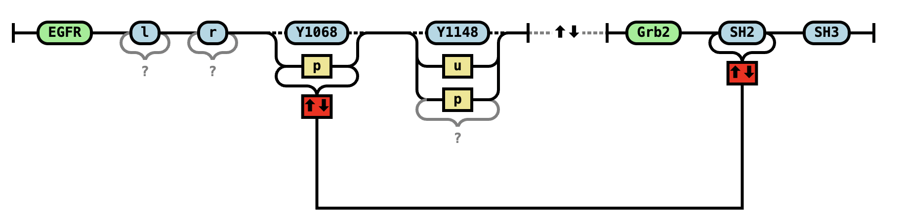


more rules
1 egfr(l,r,Y1068~Y,Y1148~Y) egfr_tot #unphosphorylated receptorNB: The first number is optional and not included in BNGL processing or visualization. Instead of
begin species the block may start with begin seed species.
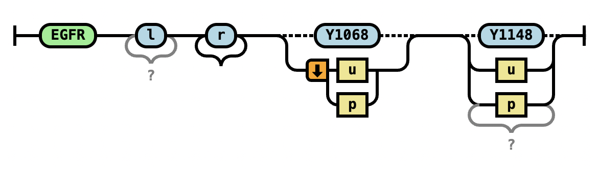
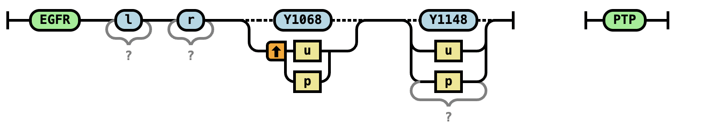

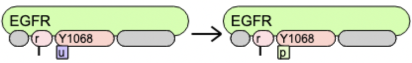
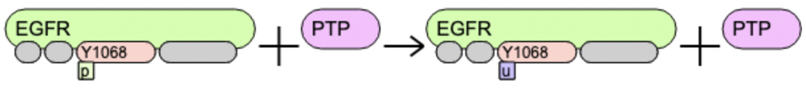
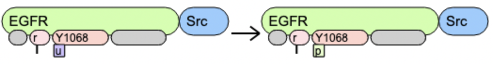
more rules
1 egfr(l,r,Y1068~Y,Y1148~Y) egfr_tot #unphosphorylated receptorNB: The first number is optional and not included in BNGL processing or visualization. Instead of
begin species the block may start with begin seed species.


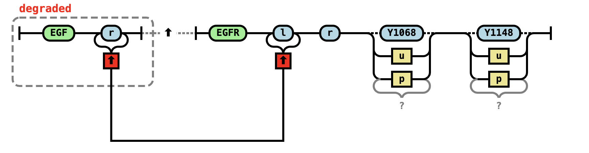
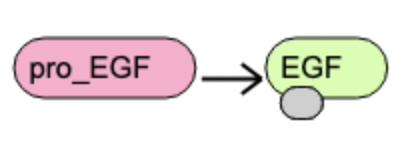
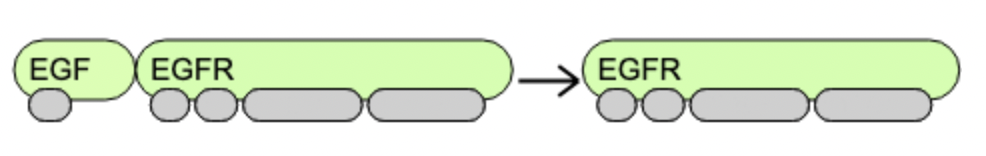
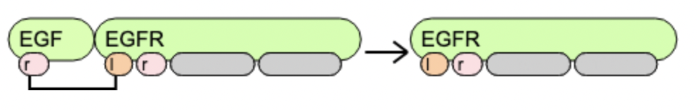